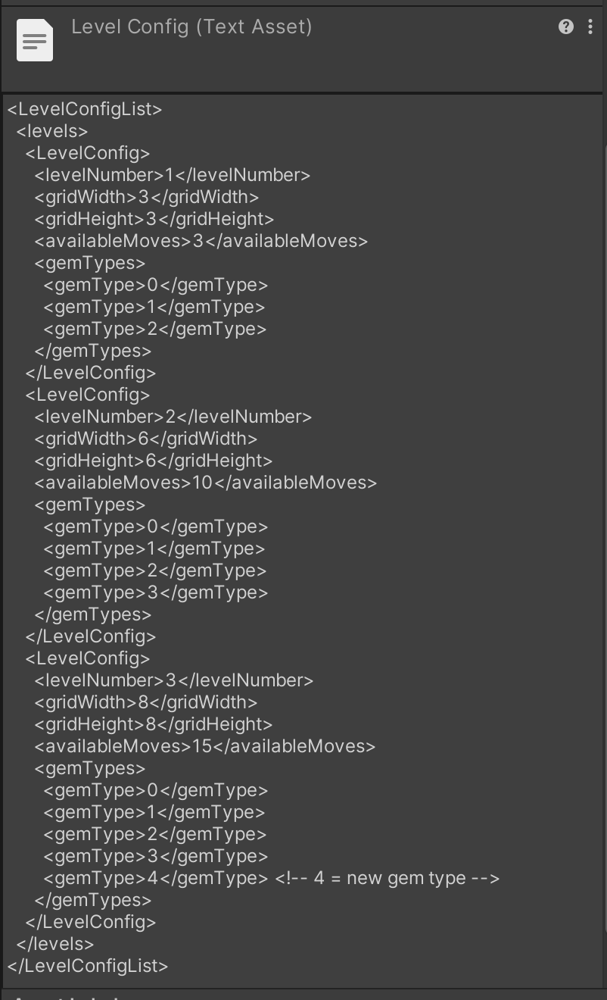

Game Scene Setup: The game consists of three scenes ("Start," "Game," and "End") with a selection menu leading to quiz gameplay and a results screen.
XML-Based Question Loading: Questions are stored in an XML file and dynamically loaded into the game via the Resources folder.
Tilt-Based Input: The game reads device accelerometer data to determine tilt direction (up for correct, down for incorrect).
Keyboard Support: Added arrow key input for PC testing, allowing players to simulate tilting with up/down arrow keys.
Game Flow: Players must center their phone before answering, then select an answer and wait before advancing to the next question.
Visual & Audio Feedback: Correct and incorrect answers trigger color changes, sound effects, and screen overlays.
Custom Quiz Lists: Players can select different quiz topics by updating the XML files and modifying the selection menu.
Score System: Tracks correct and incorrect answers, shuffles quiz questions for variety, and displays final score statistics in the "End" scene.
Heads Up!: Two Themes
Clash of Clans: Deploying Archers and Barbarians
Clash of Clans: Move Buildings + Save/Load Data
Clash of Clans
Deploying Units
AI City Combat System: AI units navigate and attack destructible buildings using low-poly city assets and RPG-style characters.
Character and AI Setup: The character reuses movement and animations from a previous lab, separating AI and player control with a Pilot system.
AI Navigation and Targeting: AI moves using NavMeshAgents, prioritizing and attacking buildings based on value and distance.
Combat System: AI attacks buildings with animation-triggered damage, destroying them over time with a balanced attack cooldown.
Unit Deployment System: Players deploy troops by clicking on the map, selecting from different unit types with unique stats and a deployment limit.
Expansion Options: Buildings can fight back, destroyed buildings swap for damaged versions, and strategic unit placement enhances gameplay.
Moving Buildings (Save + Load)
City Building System: Players design a city by placing, dragging, and rotating buildings, roads, and trees.
Game Scene Setup: The project includes two scenes, “Empty” for editing and “Start” for gameplay, with procedural grass generation.
Building Placement: Clicking on a prototype spawns a draggable city object, which is added to the playfield grid.
Drag and Drop System: Buildings can be dragged, repositioned, and rotated while ensuring no overlap.
Grid-Based Storage: Objects are tracked in a structured grid system with lookup tables for efficient placement.
Save and Load Feature: The city layout is stored in XML format, allowing users to save and reload their designs.
Smooth Movement and Rotation: Objects smoothly transition between positions and rotate gradually instead of snapping.
Gameplay Modes: A toggle button switches between edit mode (placing buildings) and play mode (resource accumulation).
Fortnite
Game Setup: Players control a sword-wielding character in a 3D environment using pre-existing assets and animations.
Character Movement: Uses Unity's CharacterController for movement, with keyboard and virtual joystick support.
Camera System: Implements a follow camera with adjustable azimuth and elevation, controlled via keyboard or virtual joystick.
Animation Integration: Uses a blend tree for directional movement animations and a trigger-based attack animation.
Attack System: Players perform a spinning sword attack using a UI button or spacebar input.
AI and Targets: Enemy targets exist for testing attack mechanics, triggering destruction on hit.
Expansion Options: Players can add camera collision avoidance, destructible targets, or convert the character into a shooter.
Fortnite: Joystick + Target Enemies
Subway Surfers: Shader Bend + Object Pooling
Subway Surfers
Subway Surfer Clone: An infinite runner where the player dodges obstacles while running along a never-ending track.
Game Scene Setup: The project starts with a fully playable scene in “Game.unity” using Unity’s CharacterController.
Player Movement: The cat avatar moves between three lanes using swipe gestures and responds to jumps, ducks, and crashes.
Swipe Controls: Implemented via a UI-based Swiper component, detecting left, right, up, and down gestures.
Camera Follow: A FollowCam script ensures the camera smoothly tracks the player’s movement with LateUpdate().
Curved World Shader: A shader bends the track to create an artificial horizon, reducing the need for infinite draw distance.
Object Pooling: An ObjectPool system reuses objects like bananas and pickup effects instead of continuously instantiating them.
Banana Pickups: A PickupSpawner places bananas on the track, and collected bananas trigger visual and audio feedback.
Bending The bender shader adjusts bend direction and amount smoothly over time, preventing sudden changes.
Bend Frequency: The track bends often enough to be noticeable within 30 seconds while ensuring smooth transitions.
Draw-in Optimization: The bending effect conceals track loading, preventing the center of the track from appearing on screen just as in the real implementation of Subway Surfers.
Candy Crush
Fruit Match-3 Game: A grid-based puzzle game where players swap fruit characters to create matches of three or more.
Game Scene Setup: The project starts with a single scene, "Game.unity," where fruit characters fall into a 6x6 grid.
GemGrid.cs: Handles grid generation, falling mechanics, and match detection for the fruit characters.
Match Detection: The game detects horizontal and vertical matches of three or more identical fruits and removes them.
Fruit Swapping: Players can swipe fruits left, right, up, or down to swap adjacent fruits and trigger matches.
Animations & Effects: Uses SimpleAnim.cs from Lab04 for fruit animations and a sound effect when matches occur.
Pointer Controls: Implements pointer handlers to detect player input for touching, dragging, and swapping fruits.
Game Over Condition: The game ends when the player runs out of moves, displaying a "Game Over" message before restarting.
Move Counter: Players start with 10 moves, with each swipe reducing the count. When moves reach zero, the game resets.
Level Progression (Design Path): Levels vary in grid size, fruit types, and move limits, progressing sequentially after each game over.
Level Configuration: Level data is stored XML file to define the number of fruits and moves per level.
Expanded Gameplay: A fifth fruit type (lemon) is introduced, with different levels using different subsets of the available fruits.
Candy Crush: Level Variation
XML Level Variation

Flappy Penguin: Score and Timer
Flapping Penguin
Flappy Penguin Game: A side-scrolling game where the player controls a penguin's vertical movement by flapping its wings to avoid obstacles.
Game Scene Setup: The game consists of a single scene, "Game.unity," featuring a scrolling background, a player-controlled penguin, and randomly generated pipe obstacles.
Forced Scrolling: The penguin moves forward automatically at a set speed, with vertical movement controlled by player input (space bar or mouse click).
Background Scrolling: The sky background tiles infinitely by spawning new sections on the right and deleting old ones on the left using the RepeatBackground script.
Pipe Obstacles: Pipes spawn at randomized heights at set horizontal intervals, creating a moving obstacle course for the player.
Collision Detection: The player has a trigger-based CircleCollider2D, while the pipes have BoxCollider2D and Rigidbody2D (with gravity disabled). Colliding with a pipe triggers the game over state.
Death Animation & Sound: A crash animation plays when the player collides with an obstacle, and a randomized squawk sound is played.
Flap Sound Effect: Each time the player flaps, a sound effect is triggered using an AudioSource component.
Programming Path - Score System:
Added a UI timer displaying time in min:sec.tenths format, starting from 0:00.0 and counting up.
Implemented a score system that increments each time the player successfully passes a pipe.
Reset both the timer and score whenever the game resets.
Missle Command
Game Scene Setup: The game consists of a single scene, "Game.unity," featuring cities to protect, enemy bomb attacks, and player-controlled missiles.
Missile Input & Targeting: Players aim by touching the screen (or clicking), with targeting reticles appearing at touch positions. Releasing fires a missile.
Missile & Bomb Behavior: Missiles move toward their target and explode, destroying nearby bombs. Enemy bombs descend toward cities and explode upon impact.
Explosion Effects: Animated explosion effects play upon impact, with randomized speed, size, and rotation for variety. Effects self-delete after playing.
City Damage System: Cities transition between alive and destroyed states using an Animator. Destroyed cities reset when the game restarts.
Multi-Touch Support: The game supports multi-touch, allowing multiple missiles to be fired at different targets simultaneously on mobile devices.
Bezier Curves: Implemented a BezierCubic class for smooth missile trajectories, randomized control points for dynamic arcs, and ensured missiles stay on screen while following natural curves.